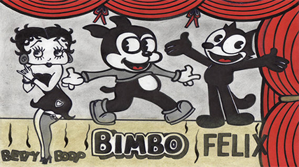

Fleischer Studios (1928-1959)
Fleischer studios, fue conocido por trabajar para Paramount Pictures. Algunos de sus dibujos mas conocidos son Betty Boop y Popeye
Ver Video Ver Mas
Te traemos los "dibujitos" con los que creciste. Para aquellos nostalgicos que quieran realizar un viaje a los inicios de la animación, como la conocemos hoy en dia. Acá vas a poder hacer un recorrido a travez de los estudios de animación y recordar eso que nos hizo felices de chicos
Fleischer studios, fue conocido por trabajar para Paramount Pictures. Algunos de sus dibujos mas conocidos son Betty Boop y Popeye
Ver Video Ver MasSteamboat Willie fue el primer corto animado lanzado el 18 de noviembre de 1928, y fue un gran éxito. Disney rápidamente ganó un gran dominio en el campo de la animación que sigue creciendo día a día
Ver Video Ver MasDe todos los estudios de animación televisiva, que surgieron durante la Era Dorada de la Televisión, sólo Hanna-Barbera logró tener éxito.
Ver Video Ver Mas
En 1929, los ex animadores de Disney Hugh Harman y Rudolf Ising hicieron una caricatura titulada Bosko, the Talk-Ink Kid, y trataron de venderla a un distribuidor en 1930.
Ver Video Ver Mas